Módulo 4: Visualización de datos con ggplot2
Introducción
En este módulo aprenderemos a hacer uso del paquete
ggplot2deltidyverse.A la par, veremos estrategias de llevar a cabo analisis exploratorio de datos (AED) ya que este depende mayoritariamente de ayudas visuales.
Usaremos además los datos del paquete
palmerpenguinsasí también como los datos del archivo de Excel “rotaXLS.xlsx”.Paquetes adicionales:
viridis,ggsci,patchwork,finalfit,GGally:install.packages("viridis", "ggsci", "patchwork", "finalfit", "GGally")Aprenderemos entonces, paso a paso cómo funciona
ggplot2dando un vistazo a sus funciones y objetos.
Introducción a ggplot2
ggplot2
ggplot2es un paquete de gráficos creada por Hadley Wickham en 2005 como una opción alternativa a los gráficos base de R (es de hecho este paquete el que inició eltidyverse).Se basa en añadir elementos a un gráfico capa por capa.
Tanto tablas anchas como largas pueden suministrarse a
ggplot2. Sin embargo, en la mayoría de los casos, se explotan más sus capacidades al utilizar tablas largas.Presenta varias ventajas, entre ellas:
Mayor versatilidad al integrar funciones predeterminadas que permiten cambiar entre tipos de gráficos fácil y rápidamente.
Amplia variedad de paletas de color y estilos (útiles para crear gráficos profesionales y listos para publicación).
Basta cantidad de librerías accesorias para gráficos especializados.
Su funcionamiento se basa principalmente en:
El argumento de mapeo (
mapping)y, Geometrías (
geom_).
Función de inicio ggplot
Constituye la primera capa o la base para llevar a cabo un gráfico.
Posee dos argumentos principales:
datapara indicar la tabla de datos a usarsemappingpara indicar las variables que gobernarán los ejes coordenados del gráfico
Función de inicio ggplot
Geometrías
Las geometrías son objetos que serán superpuestos en la base creada por la función de inicio.
En general, están nombradas con la preposición
geom_seguida de su clase.Existen una variedad amplia de geometrías:
geom_barpara gráficos de barrasgeom_linepara gráficos de lineasgeom_boxplotpara gráficos de caja y bigotegeom_histogrampara histogramasgeom_densitypara densidades
Para añadir geometrías y otras opciones a nuestro gráfico base usamos los operadores:
+, ó%+%. Este último no es tan común, ya que sobre-escribe los datos originales.
Geometrías

Estéticas de las geometrías (aesthetics)
Las geometrías tienen argumentos en común independientemente de sus específicos usos.
Entre estas están:
alphadetermina el nivel de transparencia (entre 0 y 1).filldetermina el color de relleno de una geometría. Puede ser agregado de manera manual o en función de otra variable.colorocolourdetermina el color del contorno de una geometría. Puede ser agregado de manera manual o en función de otra variable.
Existen aesthetics más específicos que funcionarán únicamente con ciertas geometrías, tales como:
size, determina el tamaño de los puntos en la geometría de puntos (geom_point)linetype, con 6 posibles valores permite seleccionar el estilo de línea.linewidthdetermina el grosor de una línea.lineenddetermina el estilo de los extremos de una línea.shapedetermina el estilo de los puntos a mostrarse (25 posibles estilos)
Estéticas de las geometrías (aesthetics)
Formato básico de figuras en ggplot2
Agrupaciones
Se pueden asignar estéticas dependiendo de los grupos presentes en los datos.
Podemos definirlo en la función de mapeo.
Escalas
Paletas de color
Una de las razones por las cuales
ggplot2es tan popular, es la relativa sencillez de usar distintas paletas de color.Al no ser un curso dedicado a visualización de datos, nos limitaremos a explorar la oferta de mis dos librerías preferidas para paletas de color con
ggplot2.viridisofrece 8 paletas de color basadas en secuencias de azul y amarillo que evitan en la medida de lo posible el color rojo. Es recomendada por ciertos Journals al ser amigable con personas daltónicas.ggsciofrece varias paletas de color inspiradas en los colores usados por distintos journals (por ejemplo: Nature, Lancet entre otros), además de paletas inspiradas en series de televisión (por ejemplo: Futurama, Rick & Morty entre otros).
Paletas de color
Paletas de color
Facetas
Etiquetas
ggplot(data = penguins,
mapping = aes(x = bill_length_mm,
y = bill_depth_mm,
color = species)) +
geom_point(alpha = 0.25, size = 5) +
scale_x_continuous(breaks = seq(30, 60, 5)) +
scale_y_continuous(breaks = seq(10, 24, 2)) +
scale_color_futurama() +
facet_wrap(~island) +
labs(title = "Largo de pico vs. Profundidad de pico",
subtitle = "Pingüinos de Palmer",
caption = "Gráfica propia",
x = "Largo del pico",
y = "Profundidad del pico",
color = "Especie")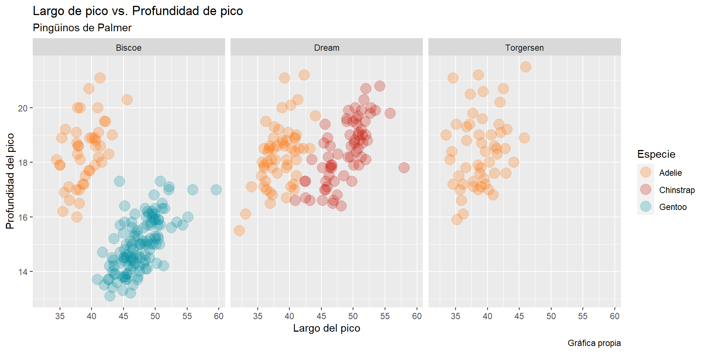
Estilos
ggplot(data = penguins,
mapping = aes(x = bill_length_mm,
y = bill_depth_mm,
color = species)) +
geom_point(alpha = 0.25, size = 5) +
scale_x_continuous(breaks = seq(30, 60, 5)) +
scale_y_continuous(breaks = seq(10, 24, 2)) +
scale_color_futurama() +
facet_wrap(~island) +
labs(title = "Largo de pico vs. Profundidad de pico",
subtitle = "Pingüinos de Palmer",
caption = "Gráfica propia",
x = "Largo del pico",
y = "Profundidad del pico",
color = "Especie") +
theme_bw()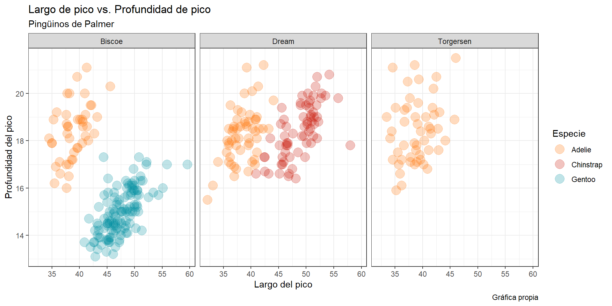
Gráficos como objetos
grafico1 <- ggplot(data = penguins,
mapping = aes(x = bill_length_mm,
y = bill_depth_mm,
color = species)) +
geom_point(alpha = 0.25, size = 5) +
scale_x_continuous(breaks = seq(30, 60, 5)) +
scale_y_continuous(breaks = seq(10, 24, 2)) +
scale_color_futurama() +
facet_wrap(~island) +
labs(title = "Largo de pico vs. Profundidad de pico",
subtitle = "Pingüinos de Palmer",
caption = "Gráfica propia",
x = "Largo del pico",
y = "Profundidad del pico",
color = "Especie") +
theme_bw()
grafico2 <- grafico1 + theme_classic()
grafico2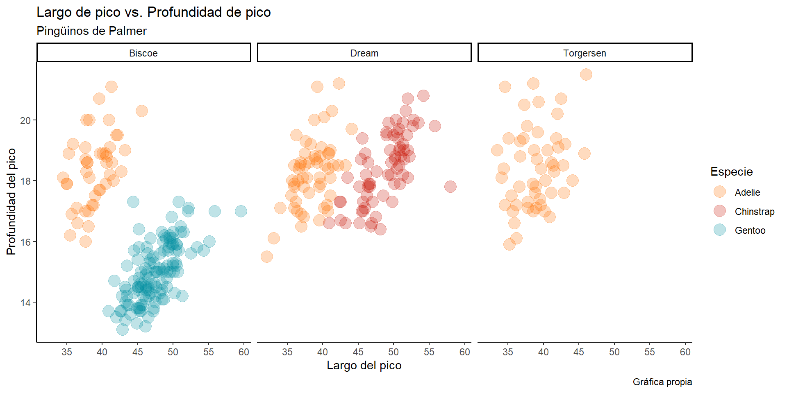
Geometrías estadísticas
Otra funcionalidad importante son las geometrías estadísticas. Entre ellas:
geom_smooth: grafica regresiones sobre nubes de puntosgeom_errorbarygeom_errorbarh: grafican lineas de error verticales y horizontales respectivamente.geom_ribbon: grafica nubes sombreadas que pueden representar varios estadísticos como errores estándar, intervalos de confianza, etc.
Geometrías estadísticas
ggplot(data = penguins,
mapping = aes(x = bill_length_mm,
y = bill_depth_mm,
color = species)) +
geom_point(alpha = 0.25, size = 5) +
scale_x_continuous(breaks = seq(30, 60, 5)) +
scale_y_continuous(breaks = seq(10, 24, 2)) +
scale_color_futurama() +
facet_wrap(~island) +
geom_smooth(method = "lm") +
labs(title = "Largo de pico vs. Profundidad de pico",
subtitle = "Pingüinos de Palmer",
caption = "Gráfica propia",
x = "Largo del pico",
y = "Profundidad del pico",
color = "Especie") +
theme_bw()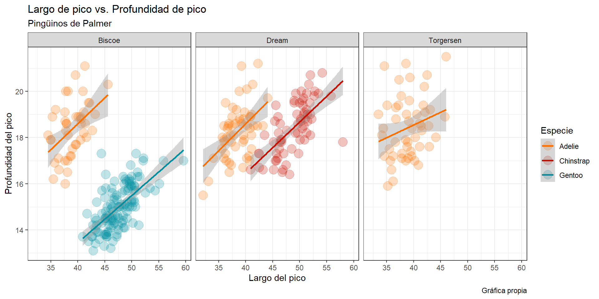
Autoevaluación
theme_lightproduce gráficos como
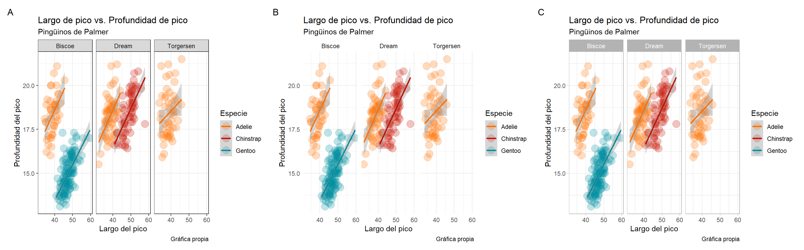
- El siguiente gráfico
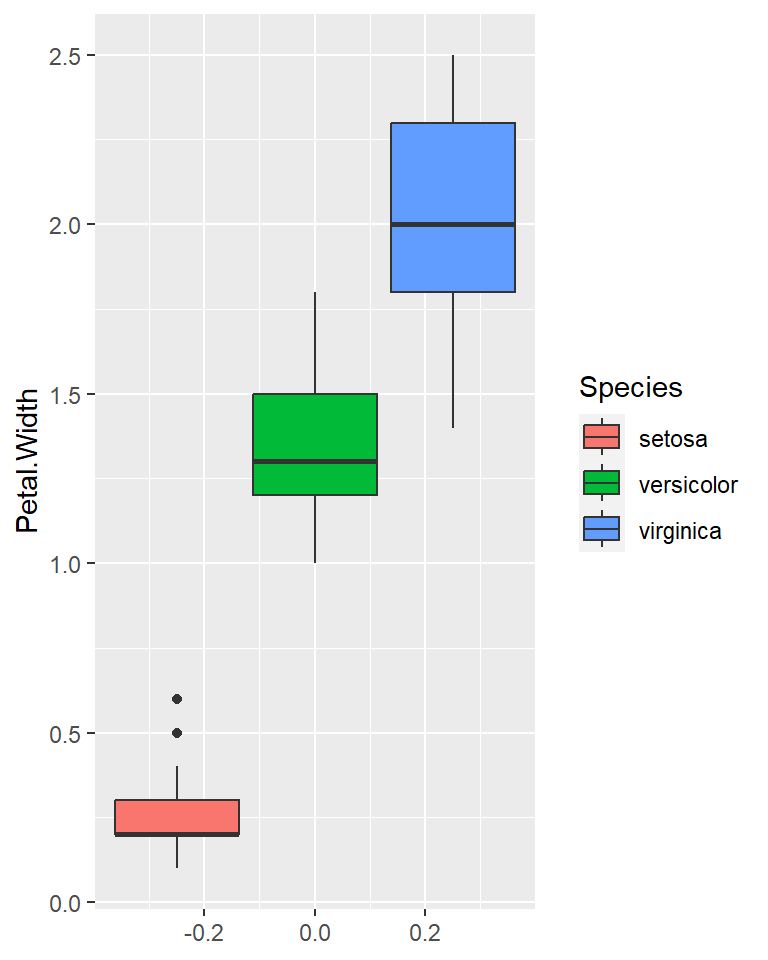
- Para obtener el siguiente gráfico:
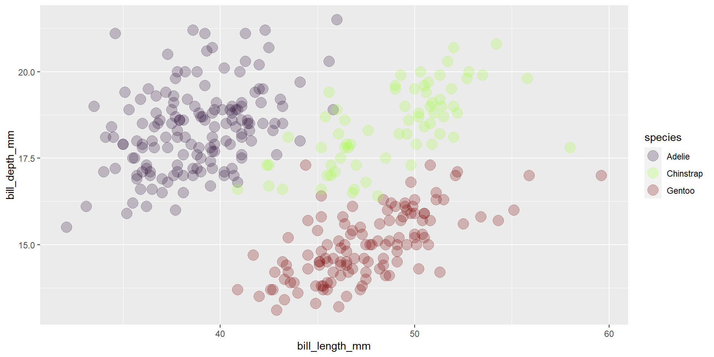
por:
scale_color_viridis(option = "G")scale_color_viridis(discrete = T, option = "G")scale_color_viridis(discrete = T, option = "H")
Principios de Análisis Exploratorio de Datos (AED)
Datos perdidos
La perdida de datos es común en casi todo experimento, sobre todo en aquellos de naturaleza observacional.
El primer paso que recomiendo en un análisis exploratorio, es checar si existen o no datos perdidos.
Esto por cuanto así se prevee si los métodos de inferencia a usarse necesitan o no ser corregidos.
Únicamente cuando la severidad de la pérdida de datos es muy grande aconsejo a recurrir a estas dos opciones (en orden de complejidad estadística de menor a mayor)
Repetir el experimento
Llevar a cabo imputación de datos
En este curso vamos a limitarnos a usar métodos de análisis corregidos cuando estemos ante la presencia de datos perdidos ya que la imputación de datos requiere de conocimientos teóricos extensos acerca de los tipos de mecanismos de pérdida de datos.
EVITAR el reemplazar los valores perdidos por ceros. Esta suele ser una práctica más o menos común pero que introduce mayores problemas que los que “soluciona”.
En resumen, no hay que temer el contar con datos perdidos, siempre y cuando estos no sean masivos.
Datos perdidos
Datos perdidos
$Continuous
label var_type n missing_n missing_percent
bill_length_mm bill_length_mm <dbl> 342 2 0.6
bill_depth_mm bill_depth_mm <dbl> 342 2 0.6
flipper_length_mm flipper_length_mm <int> 342 2 0.6
body_mass_g body_mass_g <int> 342 2 0.6
year year <int> 344 0 0.0
mean sd min quartile_25 median quartile_75 max
bill_length_mm 43.9 5.5 32.1 39.2 44.5 48.5 59.6
bill_depth_mm 17.2 2.0 13.1 15.6 17.3 18.7 21.5
flipper_length_mm 200.9 14.1 172.0 190.0 197.0 213.0 231.0
body_mass_g 4201.8 802.0 2700.0 3550.0 4050.0 4750.0 6300.0
year 2008.0 0.8 2007.0 2007.0 2008.0 2009.0 2009.0
$Categorical
label var_type n missing_n missing_percent levels_n
species species <fct> 344 0 0.0 3
island island <fct> 344 0 0.0 3
sex sex <fct> 333 11 3.2 2
levels levels_count levels_percent
species "Adelie", "Chinstrap", "Gentoo" 152, 68, 124 44, 20, 36
island "Biscoe", "Dream", "Torgersen" 168, 124, 52 49, 36, 15
sex "female", "male", "(Missing)" 165, 168, 11 48.0, 48.8, 3.2Datos perdidos
Datos perdidos
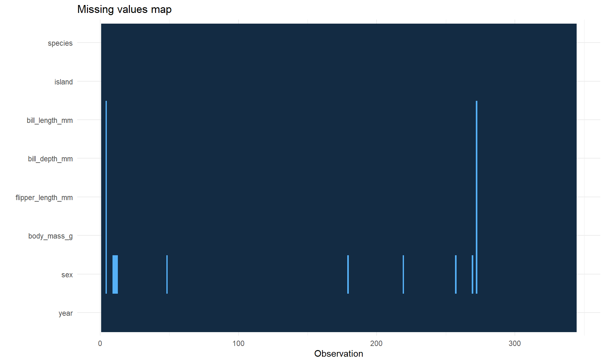Datos perdidos
sub_penguins <- na.omit(penguins)
ggplot(sub_penguins,
aes(x = flipper_length_mm, y = body_mass_g, colour = species)) +
geom_point(alpha = 0.7,
size = 3) +
geom_smooth(method = "lm") +
scale_x_continuous(breaks = seq(150, 250, 10)) +
scale_y_continuous(breaks = seq(2500, 7000, 500)) +
scale_color_viridis(discrete = T) +
facet_wrap(~sex) +
labs(title = "Largo de aleta vs. peso",
subtitle = "Pingüinos de Palmer",
caption = "Gráfica propia",
x = "Largo de aleta",
y = "Peso",
color = "Especie") +
theme_bw()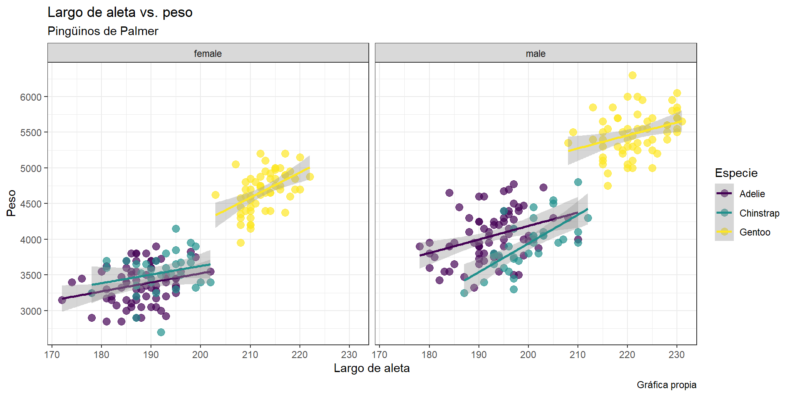
Observaciones anormales (outliers)
Un outlier puede definirse como aquella observación que dista considerablemente de la mediana de una población.
Pueden deberse a errores en la toma de mediciones o valores que realmente existen.
En estadística, una entre varias definiciones de outlier es dada de acuerdo al criterio del Rango Intercuartílico (RIC o IQR en inglés).
Este criterio establece que toda observación por encima del tercer cuartil + 1.5 veces el RIC o por debajo del primer cuartil - 1.5 veces el RIC es considerada como outlier.
\[ I=\left[C_{0.25}-1.5 \times RIC ,\,C_{0.75}+1.5 \times RIC \right] \]
Donde el RIC es sencillamente la diferencia entre el primer y el tercer cuartil de una muestra.
Este método es precisamente la base para los gráficos de caja y bigote.
Gráficos de caja y bigote

- Un gráfico de caja y bigote es el resumen de 5 cantidades de importancia para explorar una distribución: la mediana, los cuantiles 1 y 3 y los valores mínimo y máximo de una distribución en función del RIC
Imagen de autoría de Michael Galarnyk
Gráficos de caja y bigote en R base
Gráficos de caja y bigote en R base
Los gráficos base de R son de rápida implementación.
Generalmente sirven para dar vistazos rápidos a los datos.
Pueden por supuesto ser usados para productos finales de publicación, pero la sintaxis para dar formato y exportarlos es un tanto confusa (a mi parecer).
Tienen sus limitaciones, ¿qué tal si en este caso me hubiese gustado realizar un gráfico por facetas para ver más variables categóricas al mismo tiempo?
Gráficos de caja y bigote en ggplot2
Y ahora, ¿qué hago con los outliers?
Y ahora, ¿qué hago con los outliers?
El remover outliers no se aconseja antes de llevar a cabo análisis de inferencia estadística.
Para remover outliers antes de analizar propiamente los datos, se necesita tener certeza de las razones por las cuales estos fueron registrados:
Fallas comprobadas en el equipo de medición
Errores al escribir las mediciones en el medio de registro (libro de laboratorio, base de datos)
Falencias en las técnicas, metodologías o materiales que ayudaron en la toma de las observaciones (reactivos expirados, protocolos mal interpretados o descontinuados)
Si las anteriores no se cumplen, tener respaldo bibliográfico o experiencia de que el valor del outlier es improbable en la población sujeto de estudio.
Muchas veces, los aparentes outliers no tienen mayor efecto en las inferencias que se realicen. Y en los casos extremos de considerar su remoción, se puede recurrir a transformaciones de los datos. En otras palabras, el último recurso es removerlos.
Cuando llegado el caso, no existe otra opción, debería ser una obligación el reportar las razones para no considerarlos en el análisis (integridad científica).
¿Cómo remuevo outliers?
La respuesta más simple: borrarlos de la base de datos antes de cargarla en R.
Sin embargo, a veces trabajamos con tablas de datos extensas, y la remoción manual puede ser larga, tediosa y sujeta a errores que podrían empeorar la situación.
Para ilustrar cómo hacerlo en R, vamos a recurrir a un ejemplo más sencillo donde solo lidiemos con una variable categórica a la vez. Así, veamos únicamente al caso de las variables
bill_length_mmyspecies
¿Cómo remuevo outliers?
¿Cómo remuevo outliers?
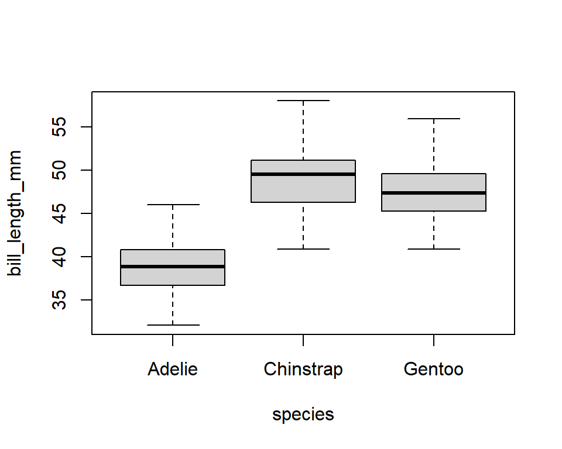Autoevaluación
Los datos del archivo de excel “rotXLS.xlsx” que mencionamos brevemente en el módulo anterior contiene información sobre el conteo de casos de rotavirus en Berlín desde el año 2001 hasta el 2020. Las variables de esta tabla de datos son:
date: fecha de cierre de la toma de datoscases: número de casos de rotavirus en la semanaweek: semana epidemiológicaincidence: número de casos/100000 habitantesFM: media diaria de velocidad del viento (m/s)RSK: media diaria de lluvia (mm)
SHK_TAG: media diaria de nieve (cm)PM: media diaria de presión atmosférica (hPa)TMK: media diaria de temperatura (°C)TXK: media diaria de temperatura máxima (°C)TNK: media diaria de temperatura mínima (°C)UPM: media diaria de humedad relativa (%)
En nuestro proyecto podemos importar esta tabla con el siguiente código:
- Ignorando por un momento la naturaleza longitudinal de estos datos, podemos crear un gráfico de múltiples cajas de bigotes por semana epidemiológica para el número de casos, que se vería de esta manera:
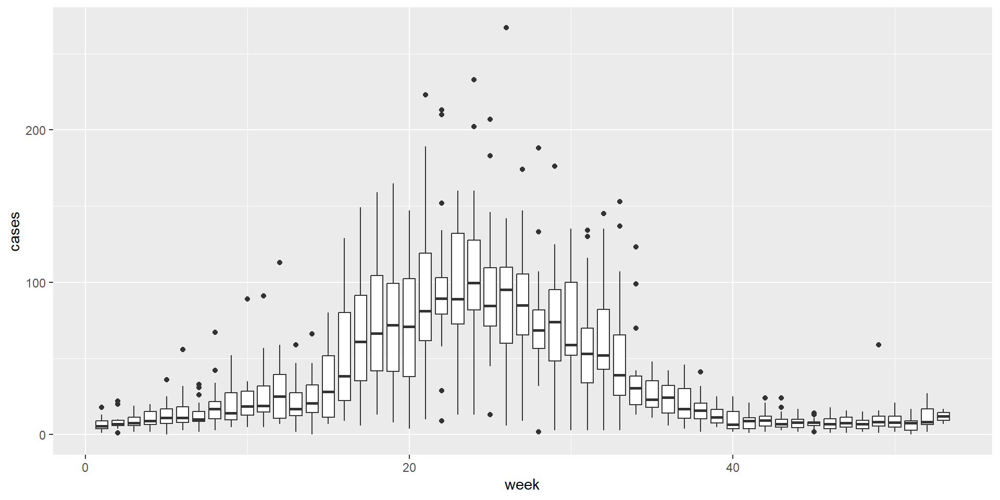
Con el siguiente código:
- Con lo que hemos aprendido hasta el momento, si quisiéramos identificar y remover posibles outliers, podríamos usar el siguiente código:
El número de outliers detectados es:
- 232
- 323
- 156
- 212
- Mirando el gráfico de cajas y bigotes de
sub_rot, podríamos llevar a cabo sucesivas nuevas identificaciones y remociones de outliers hasta terminar con un gráfico ya sin puntos fuera de los RIC. Teniendo en cuenta esto, cuál(es) de las siguientes afirmaciones es(son) verdadera(s)
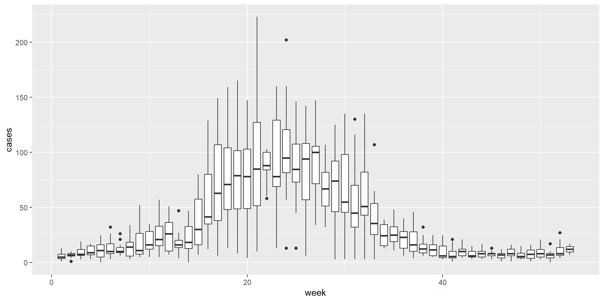
No importa cuántas veces repita el proceso, eliminar todo outlier es una buena práctica
Al eliminar un outlier, no hay garantía que otra observación se convierta en uno.
Se aconsejaría remover outliers una sola vez, y continuar con los análisis.
Parecería que el RIC no sería un criterio suficiente para remover outliers.
Relaciones lineales
El dar un vistazo a relaciones lineales entre variables continuas también nos puede dar una idea de la presencia de outliers.
Adicionalmente, nos permite visualizar arreglos/patrones en los datos que responden a la influencia de variables de agrupación (en el ejemplo de los pingüinos ya vimos que las especies y las islas determinan algún tipo de arreglo).
También nos dan una idea de las correlaciones entre las variables. Esto es de mayor importancia en los casos que tenemos en mente llevar a cabo análisis multivariables.
Por ejemplo, en análisis de covarianza (cuando una o más variables explanatorias son continuas), no tiene sentido el incluir variables altamente correlacionadas entre sí.
Para esto, la forma más sencilla es llevar a cabo gráficos de dispersión para tantos pares posibles de combinaciones de variables continuas tengamos.
Esto obviamente sería tedioso y propenso a errores si lo llevamos a cabo de manera manual.
Afortunadamente R nos ofrece varias formas de llevar a cabo matrices de gráficos de dispersión
Matrices de dispersión en R base
Matrices de dispersión en ggplot2
Histogramas
Un histograma es un gráfico estadístico que divide una variable continua en un determinado número de rangos y luego cuenta el número de veces que los datos caen en cada uno de ellos para producir una barra por rango.
Sirve como un diagnóstico de la distribución de una muestra.
Desde la perspectiva del AED, nos da una idea visual de si las variables se alejan de la normalidad.
Esto último podría dar indicaciones de si es necesaria una transformación.
¡Pero!… no es recomendable empezar transformando variables directamente hasta no conducir un análisis formal.
Histogramas en R base y ggplot2
Otras geometrías útiles
Gráficos de densidad
Gráficos de barras
Gráficos de barras apiladas
Mapas de calor en R base
Gráfico bidimensional de datos en donde los valores son representados con colores.
Las variables de los ejes deben ser categóricas, y la intensidad de los colores en el plano coordenado depende de la magnitud de una variable continua.
Mapas de calor con heatmaply
Gráfico bidimensional de datos en donde los valores son representados con colores.
Las variables de los ejes deben ser categóricas, y la intensidad de los colores en el plano coordenado depende de la magnitud de una variable continua.
Gráficos de líneas
Gráficos de líneas con estadísticos descriptivos
library(lubridate)
library(dplyr)
rot_berlin$mes <- month(rot_berlin$date)
rot_berlin$year <- year(rot_berlin$date)
temp_berlin <- rot_berlin %>%
group_by(mes) %>%
summarise(n = n(),
media = mean(TMK),
desv = sd(TMK),
s.err = desv/sqrt(n))
grafico3 <- ggplot(temp_berlin,
aes(x = factor(mes),
y = media,
group = 1)) +
geom_point() +
geom_line() +
geom_errorbar(aes(ymin = media - s.err,
ymax = media + s.err),
width = .3)
grafico3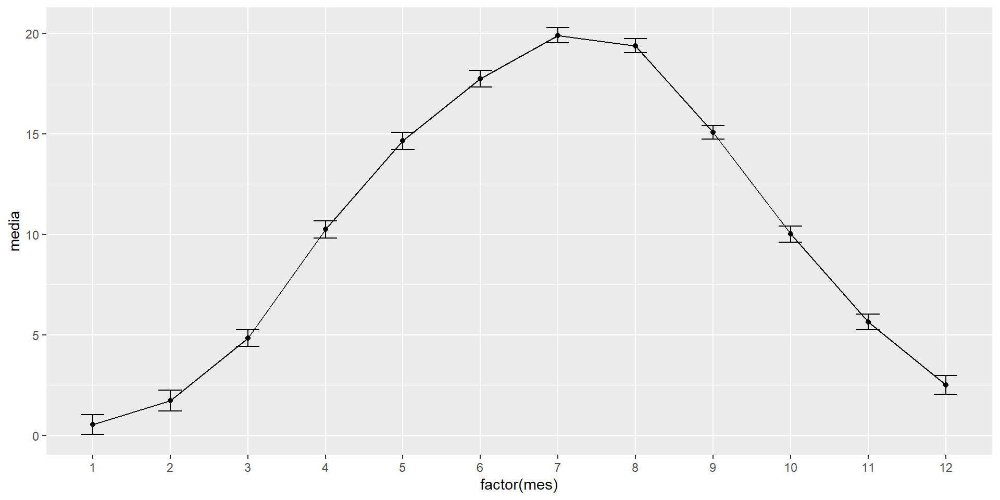
Combinando y exportando gráficos de ggplot2
Un reto que hemos todos encontrado alguna vez es el de combinar varios gráficos en uno solo.
Esto requiere paciencia y el uso de software externo (llámese CorelDraw, Adobe Illustrator, PowerPoint o incluso Paint).
La librería complementaria
patchworknos permite combinar gráficos deggplot2de una manera sencilla y rápida.Además, gracias a la función
ggsavedeggplot2podemos exportar fácilmente nuestros gráficos sin requerir (ojalá) a la ayuda de software externo para dar retoques finales a estos gráficos.
Combinando gráficos con patchwork
Para más información de las funciones y utilidades de patchwork puedes visitar la página oficial con su documentación y ejemplos.
Exportando gráficos de ggplot
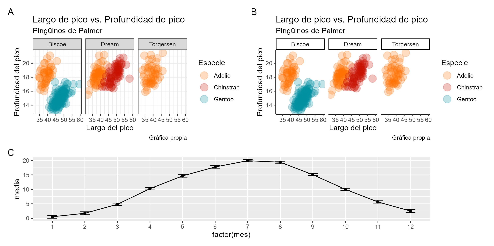Antes de terminar…
Anatomía de un ggplot

Imagen tomada de aquí
Más exploración
Lo que hemos revisado hasta el momento, son las técnicas más frecuentemente usadas para AED.
Sin embargo, existen librerías de R que permiten también hacer AED de una manera automática y más accesible.
Como ejemplos, haremos un enfoque en dos librerías que hacen uso de Shiny para brindar esta experiencia al usuario. Estas son
exploreydataxray
R no es solo ciencia y seriedad
Al ser un software de código abierto, abre las posibilidades a que programadores muy hábiles y con mucho tiempo libre por cierto, creen paquetes cuya utilidad puede ser prácticamente nula (al menos desde el punto de vista académico de publicar o morir).
Como es de esperarse, la mayoría de estos no están disponibles en CRAN. Sin embargo, les dejo unos cuántos ejemplos
Antes de terminar…
Este paquete comenzó como una especie de broma a partir del estreno de la película de Barbie.
Es básicamente una librería de paletas de color, primeramente basadas en Barbie
Antes de terminar…
- No tengo idea del origen de este paquete, pero me da gusto saber que existe.
Antes de terminar…
No tan relacionado con
ggplot2, pero cabe mencionarlo. El paquetedatasauruscomenzó inspirado en el data set del mismo nombre creado por Alberto Cairo.Cairo creó el data set enfatizando que: “Nunca confies en estadísticos descriptivos únicamente, siempre visualiza tus datos”.
Al contrario de los otros dos, este sí está disponible en CRAN (es excelente para la enseñanza de correlaciones espurias)
Funciones y librerías en esta sesión
Funciones
seqgenera una secuencia de números.na.omitremueve observaciones perdidas.plotfunción de ploteo de R base. Produce diversos gráficos, entre ellos: dispersión, líneas y caja y bigotes.pares una función que permite configurar parámetros gráficos de R base. Su uso más común es para setear los cuadrantes del gráfico.plot.newproduce un gráfico completamente en blanco en R base. Es útil para rellenar cuadrantes de un gráfico (cuando el número de cuadrantes es par y los gráficos a distribuir por cuadrante es impar).::operando de localización de objetos. Se lo utiliza para llamar objetos de librerías sin necesidad de cargarlas en la sesión.
Librerías
palmerpenguinsggplot2es un paquete con una basta cantidad de funciones para llevar a cabo gráficos.ggplotes la función que da inicio a todo objeto deggplot2.geom_es el prefijo de todas las geometrías deggplot2.ggsavepermite exportar gráficos de ggplot a diferentes formatos como .png, .jpg, .pdf.
viridises un paquete que ofrece 8 paletas de color basadas en secuencias de azul y amarillo (amigable con personas daltónicas).ggsciofrece paletas de color basadas en journals y series de televisión.finalfitnos permite realizar exploración de los patrones de datos perdidos.GGallyes un paquete con funcionalidades extras basadas enggplot2. Aquí nos enfocamos en su uso para realizar gráficos de matrices de variables.